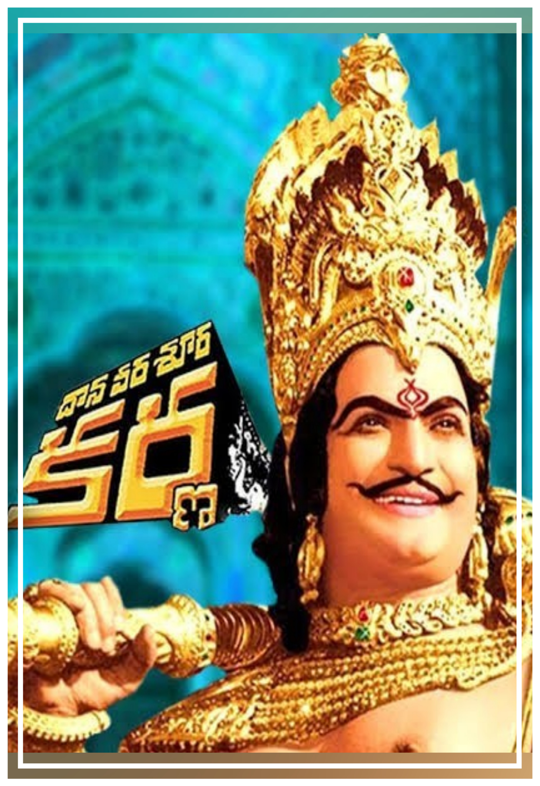
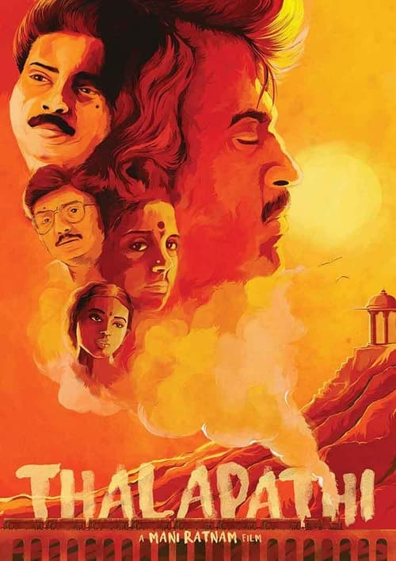

-
Daana Veera Soora Karna (1977): This Telugu epic, directed by and starring N. T. Rama Rao (NTR), is one of the most iconic representations of Karna in Indian cinema. In this film, Karna’s character is portrayed with grandeur and heroism, focusing on his virtues of charity, loyalty, and friendship. NTR’s portrayal elevates Karna to a near-divine status, emphasizing his generosity (such as the legendary donation of his armor and earrings to Indra), and his tragic, fated death. Here, Karna is depicted as a hero wronged by fate, with a strong emphasis on the injustice of his social status, making him an underdog figure.

-
Thalapathi (1991): Directed by Mani Ratnam, Thalapathi is a Tamil-language film that adapts the Karna-Duryodhana friendship to a contemporary, urban setting. Rajinikanth's character, Surya, is an orphan raised in poverty, who becomes a loyal friend and enforcer for a local crime boss, Devaraj (Mammootty), the Duryodhana figure. The film portrays Surya’s loyalty to Devaraj in a similar vein to Karna’s loyalty to Duryodhana, despite the moral ambiguity of Devaraj’s actions. Thalapathi highlights the sense of kinship that exists outside of blood ties, and Surya’s marginalization, like Karna’s, stems from his social status. The film frames him as an anti-hero, whose nobility shines through even in morally compromised circumstances.

-
Kalki: 2898 AD (2024): The Telugu film Kalki: 2898 AD, directed by Nag Ashwin, is set in a futuristic dystopian world and features a retelling of ancient epics with a sci-fi twist. While specific details about the interpretation of Karna’s character are to be elaborated upon in the film’s planned sequeles, the franchise is expected to explore the themes of mythological figures in a modern context. Here, despite the Karna reincarnation standing against other heroic characters, he is still presented as valorous and worthy of praise: further establishing the notion that the Mahabharata is not a story of good versus evil, but rather a complex tale of conflicting senses of ethics and morality.